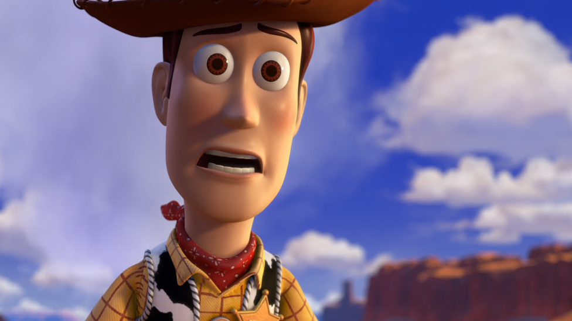
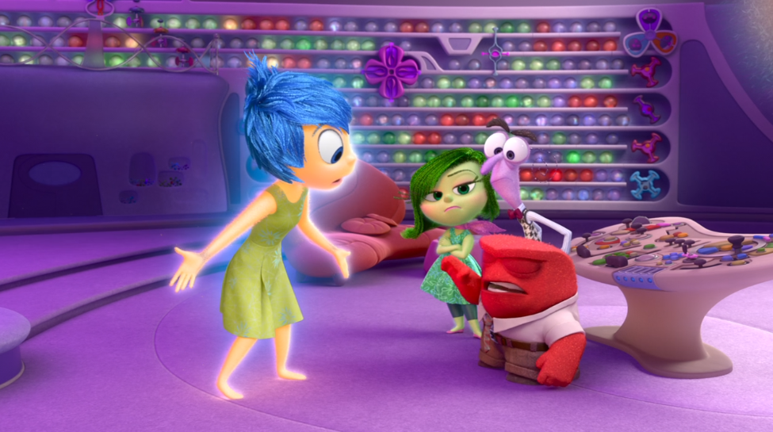
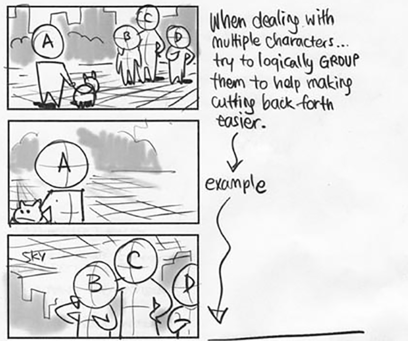

Storyboard
Definition?
Die Umsetzung des Drehbuchs in eine Bildsequenz (ähnlich wie bei einem Comic).
Anders als beim Comic ist die visuelle Erzählung als Vorschau auf das filmische Endformat gedacht.
Es beinhaltet deshalb Kamereinstellungen und Abläufe, die bei der Umsetzung nachgebildet werden.
Bildformat ist das Produktionsformat des Filmes (z.B. 16:9).
Dialoge und Geräusche stehen unter/neben dem Panel (oder werden vom Artist bei der Präsentation vorgeführt).
Pfeile deuten Bewegungen an.
Rahmen können das Sichtfeld einer bewegten Kamera abbilden.
Animatic = Storyboard Bilder zu einem Video zusammengeschnitten
oft mit einem Temptrack, ersten Sprachaufnahmen, Platzhaltergeräuschen
Präsentationsform
An einem Board - live Performance
Ausgedruckt
Als Bildershow
Als Animatic (Story Reel)
Anfängerfehler
Nur ein Shot
Alles wie auf einer Bühne
Teil eines guten Workflows
Gute Produktionsweise?
- Schneller
- Weniger frustrierend
- Zielgerichtet
Von Grob zu Fein
Nicht Modellieren, Animieren, Programmieren bevor wir nicht genau wissen was und warum.
Grobe Vorschau
Diskutieren & Verbessern
dann erst Umsetzen
Grob zu Fein = Arbeiten in Durchgängen
Iterativ
NICHT:
einen Teil komplett fertig
dann den nächsten Teil komplett fertig
SONDERN:
Einmal durch und dann NOCH EINMAL DURCH
immer im Blick wie alles zusammenpasst
Pro Durchgang Fokus auf einen Aspekt
Fehler sind Teil des Prozesses
Entscheidungen kommunizieren
Experimentieren => Entscheidungen festhalten
Arbeitsaufwand schätzen
Ressourcen und Schritte planen
Arbeitspakete und Meilensteine abarbeiten
Zweck des Storyboards
Storyboard als ständiger Test
ob die Story, die Choreographie, der Witz, der Dialog, das Timing funktioniert
BEVOR man Wochen/Monate/Jahre Arbeit investiert
Schnelle Vorschau bis alles passt, dann erst die Fleißarbeit
Kommunikation von Vision und Erwartung
Beispiel: Gravity Falls Intro
Storyboard bei Games:
- (Cutscenes)
- Überblick über Story (muss man ggf. dem Publisher vorstellen)
- Schlüsselmomente vorab simulieren
- Mockup des Gameplays
Storyboard als Bauplan
Ein Storyboard ZEIGT
- Wer
- was
- wie
- wo
- welche Kamereinstellung
- welches Timing (Animatic)
unter Umständen genauer als ein Drehbuch
“Sie liefern sich einen knappen Schwertkampf auf Leben und Tod.”
Wer schlägt wann zu, weicht wie aus, wie wird die Kamera geführt?
Rhythmus und Intensität der Szene
für Animation besonders wichtig: Posen
Wichtige Planungsfaktoren:
- Aufwand Szene/eines Shots
- Anzahl der Shots in welchen Sets
Shotliste
Assetliste
- Sets
- Figuren
- Props
- Effekte
Andere Boards
Mood Board
https://www.animatorisland.com/define-your-art-with-mood-boards/
Color Board/Script
Fokus Storyboard-Durchgänge
Ideen und Änderungen => neue Durchgänge
Aber ein Durchgang kann auch ein bestimmtes Ziel verfolgen
Beispiel: Kleiner Ritter fordert Troll zum Kampf
Ziel Durchgang 1:
Story verständlich machen
Ziel Durchgang 2:
Kamera verstärkend einsetzen
Ziel Druchgang 3:
Posen verbessern
Es lohnt sich das “Gleiche” mehrmals zu zeichnen!
Ziel Durchgang 4:
Mehr Bilder fürs Animatic
Ziel Durchgang 5:
Mit final(er)en Designs arbeiten
Ziel Durchgang 6:
Posen pushen
Ziel Durchgang 7:
Kamera pushen
Und dazwischen dauernd:
Storyänderung
neue Idee
Bildliche Gestaltungsmittel
Die Ziele:
Verständlich
Was passiert?
Übersicht
Interessant
Ungewöhnliche Bilder, die im Kopf bleiben
Spannend
Dramaturgie
Spannung aufbauen (und lösen)
Fragen aufwerfen (und klären)
Realität verstärken
Inneres auf die Bildebene bringen
Symbole
Distanz zur Kamera
Extreme Wide Shot EWS
Toy Story 3, Disney
Toy Story 3, Disney
Menschen oft sehr klein, nebensächlich.
Fokus auf Umgebung/Schauplatz
Very Wide Shot VWS
Toy Story 3, Disney
Wide Shot WS / Long Shot LS / Fullshot FS
Toy Story 3, Disney

Toy Story 3, Disney
Toy Story 3, Disney
Toy Story 3, Disney
Menschen komplett von Kopf bis Fuß
oft für große Gesten und Splapstick
Medium Wide/Long Shot - MLS
Toy Story 3, Disney
Noch etwas näher, Knie aufwärts
Figur ggf. bereits 1/3 angeschnitten
Amerikanische (Cowboy, Knee Shot)
Waffengürtel bis Kopf
Toy Story 3, Disney
Halbnahe (Medium Shot - MS)
Toy Story 3, Disney
Über Hüfte (unter Brust) bis Kopf
Umgebung spielt noch eine Rolle
Nahe (Medium Close Up - MCU)
Toy Story 3, Disney
Mitte Brust bis Kopf
Umgebung spielt kaum eine Rolle, aber Figur hat noch eine physikalische Präsenz
Großaufnahme (Close Up - CU)

Toy Story 3, Disney
Hals bis Stirn (oft angeschnitten)
Augen oft prominent als Tor zur Seele/Emotion
Toy Story 3, Disney
Detail (Extreme Close Up)
Toy Story 3, Disney
Toy Story 3, Disney
Distanz von Objekten zueinander (auch in der Tiefe!)
Toy Story 3, Disney
Toy Story 3, Disney
Nahe Kameraeinstellungen sparen auch Animationsarbeit
Distanz zu Bildrand
Schräge der Kamera
Horizontaler Winkel um die Szene herum
Frontal
Seitlich

Vertikaler Winkel (Unter-/Draufsicht)
Credit: Pftrack Blog
Position der Kamera
lässt Dinge größer oder kleiner erscheinen
Horizontlinie
erklärt Position der Elemente zueinander
Toy Story 3, Disney
Toy Story 3, Disney
Bewegung
Statisch
Zoom

Track / Dolly
Credit: Pftrack Blog
Pan & Tilt
Credit: Pftrack Blog
Lateral Track / Crab / Truck
Credit: Pftrack Blog
Crane / Pedestal / Jib
Credit: Pftrack Blog
Handkamera
Credit: Pftrack Blog
Steadycam
Credit: Pftrack Blog
Pixar bildet nur real mögliche Kamerapositionen und Fahrten mit Kamera-Rigs nach
Symbole
Disney/Pixar - Alles steht Kopf
Disney/Pixar - Die Unglaublichen
Disney/Pixar - Die Unglaublichen
- schneidende Linien
- getrennte Bereiche
- symbolträchtige Elemente (Uhr über dem Kopf)
Kontext
klassische Exposition
Von der Totalen immer Näher = immer intensiver
Master Shot
Übersicht, zu der immer zurück geschnitten wird (oft Long Shot, Medium Long Shot) z.B. alle Figuren an einem Tisch
Montage von Details
zu einem Gesamtbild
Schuss Gegenschuss
Disney/Pixar - Die Unglaublichen
Disney/Pixar - Die Unglaublichen
Disney/Pixar - Die Unglaublichen

Achse und Achsensprung
Variation des Winkel
Beim Schnitt auch den Winkel wechseln = viel interessanter
Insert Shot
Detail das zwischengeschnitten wird z.B. Hand nimmt einen Gegenstand auf
Schnitte sollen in Sinnabschnitten durch die Szene führen
Schneiden wenn es einen Grund dafür gibt

Zeichnerische Mittel
Graustufen, Schattierungen
Michael Lester, Dreamworks
Schattierungen entfernt
Gitternetze für Wand, Boden, Decke/Himmel
Nicht gut:
- nur Parallele
- auf Linien balancieren
- an den Rand quetschen
Gut:
- Perspektivische Staffelung - Vorder-, Mittel-, Hintergrund
- Verschiedene Winkel
Pfeile
Kamerarahmen
Software
Storyboarder by Wonderunit
https://wonderunit.com/storyboarder/
Shot Maker
Storyboarding-Software
- ToonBoom Storyboard Pro
Animationssoftware
Feste Ebenen
- Hintergrund
- Figur A
- Figur B
- Vordergrund
Demonstration in Photoshop